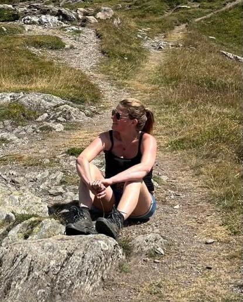

Über mich
Lara Schmid

«Lust auf Veränderung – ich begleite dich auf deinem Weg.»
Menschen zu begleiten ist das, was ich seit über zehn Jahren mache. Fünf Jahre davon in der offenen Jugendarbeit und fünf Jahre für Jugendliche beim Übergang in die Berufswelt, wo ich sie gecoacht und durch schwierige Phasen begleitet habe. Was sich durch alles zieht: Ich glaube nicht daran, dass jemand von aussen besser weiss, was für dich richtig ist.
Studiert habe ich Sozialwissenschaft an der Universität Zürich und danach Soziale Arbeit – 2021 mit dem Master of Science abgeschlossen.
Die Kinesiologie lerne ich an der Heilpraktikerschule Luzern. Im September 2026 steht die Abschlussprüfung zur Kinesiologie-Expertin an. Nach der Ausbildung bin ich gemäss OdA KT als Kinesiologin anerkannt und kann mich bei EMR und ASCA registrieren.
Mich begeistert an der Kinesiologie, dass sie ganzheitlich wirkt und Körper, Bewegung und Gespräch vereint, um Menschen in Veränderungsprozessen zu unterstützen.